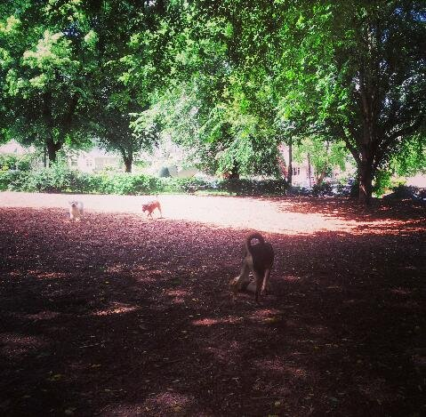
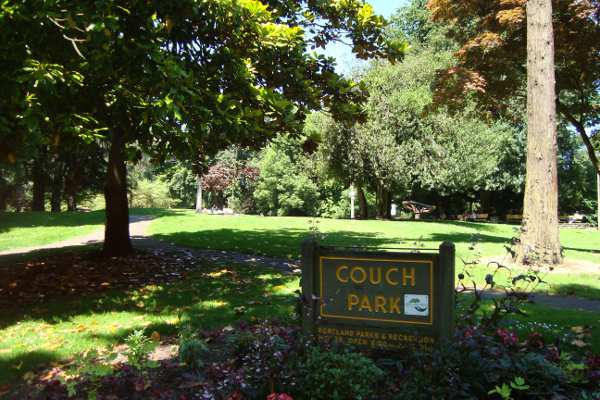
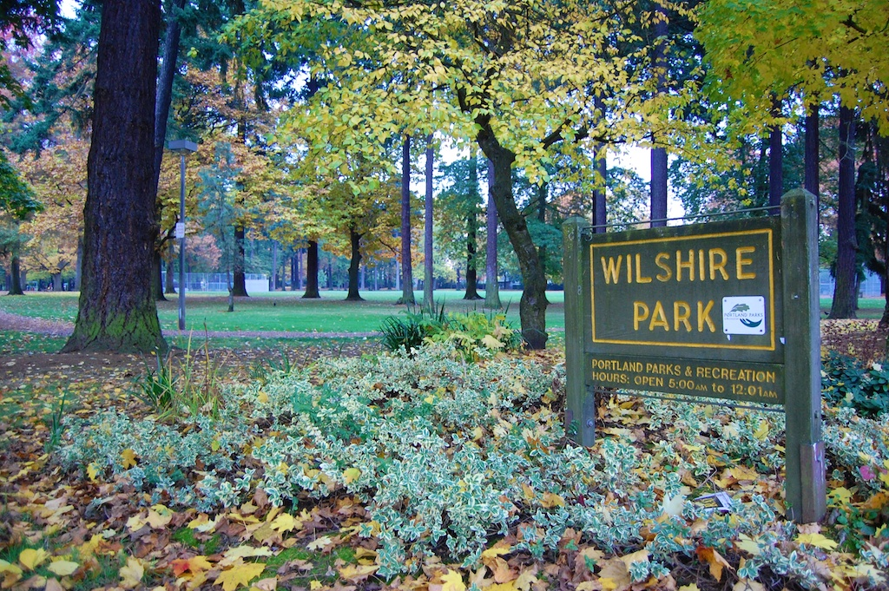
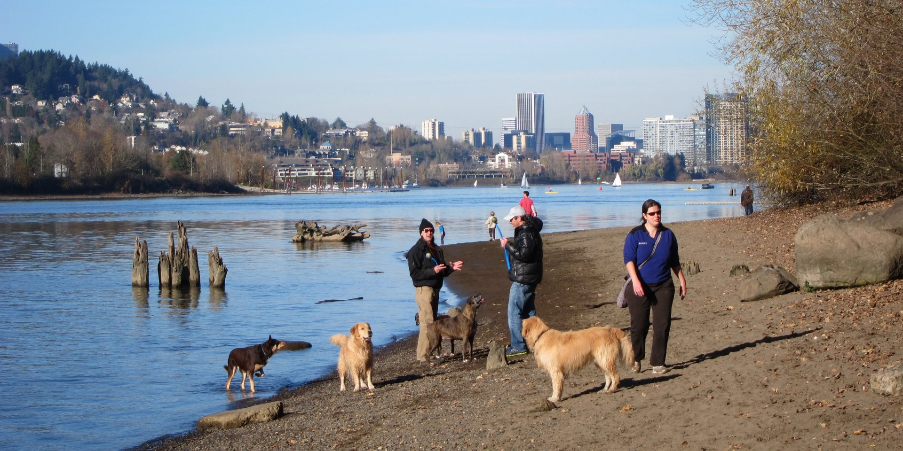
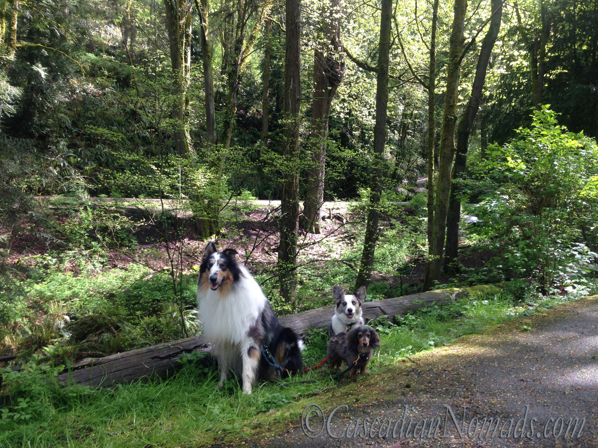

PORTLAND — When Frank Locascio would walk his yellow lab, Demi, down Moore Avenue, he felt like Portland was missing something — a dog park.
"Every day I'd walk her down the street and look at this part and say 'all they need to do is add a fence here and here,' " Locascio said, referring to a patch of green space in Portland's south side. (more)
Locascio and other volunteers with the Portland Dog Park Association are one step closer to fulfilling that vision. The organization and officials for the city of Portland gathered Monday with their furry friends to break ground on what will soon be known as Kaiah Bhagat Dog Park on Moore Avenue.
"It coincided with our master plan to have something like this," Portland Mayor David Krebs said. "(The process) has been phenomenal."
Krebs said the City Council had discussed establishing a dog park in previous years, but had never revisited the issue until the association came to the council with a proposal last year.
"This committee formed on their own and told us they'd raise the money," Krebs said. "They put together a great plan."
Locascio said the organization raised more than $70,000 to fund the project with different projects, such as the Dog Park 5K and dog washes, instead of car washes. The city agreed to repurpose land for the project, and city staff will assist in building the park, Krebs said.
The biggest donation, Locascio said, came from Raju Bhagat, who donated the fencing for the park. The park is named for the Bhagat family's dog, Kaiah, who recently died.
"Kaiah was my son's dog, and my son passed away in 2006," Bhagat said. "That dog meant a lot to me because we raised him. It helped me cope with my son's death."
It was Bhagat's love for dogs that made him sign on to support the project, he said.
"Only people who have a dog know," he said. "A dog is always happy to see you and happy when you take him on walks. We forget these things sometimes."
The park is expected to open in December, city officials said.(less)
Hours: 5am - Midnight
About:Alberta Park is a 16-acre park in Portland, OR with a designated 1.3 acre off-leash area for dogs on the east side of the park. Plastic bag dispensers and fresh water are available at the park.
Hours: Sunrise - Sunset
About: Bring your pet to play in the unfenced off-leash area in the south end of this beautiful public park with gorgeous views of the city. Don't forget water and waste bags!
NW 25th Ave, Portland, OR 97210
Hours: Sunrise - Sunset
About: Bring your pet for some off-leash fun in the fenced dog run in the northeast area of this lovely park. Water available nearby but bring bowls and waste bags.
NW 19th Ave& Glisan, Portland, OR 97209
Hours: 5am - Midnight
About:Couch Park is a small, 2-acre park in Portland, featuring an off-leash dog play area. This pet-friendly park has poop bags and fresh water available for your dogs.
NE 36th Ave, Portland, OR 97211
Hours: 5am - Midnight
About: Wilshire Park in Portland, OR is pet-friendly. The 14-acre park has an off-leash area of just over 1 acre that allows your dogs to run free. The off-leash area is in the northeast corner of the park. Bring poop bags and fresh water for your pooch.
SE Oaks Park Way, Portland, OR 97202
Hours: 5am - Midnight
About: Sellwood Riverfront Park in Portland, OR is pet-friendly. The park features a 1.5-acre off-leash area that is a great place for dogs to play. Bring poop bags and water for your pets, as they are not provided on site.
Hours: 5am - Midnight
About: Cathedral Park is a pet-friendly park in Portland, OR. The park features a half-acre off-leash area for dogs and is located underneath the St. John's bridge and is adjacent to the Willamette River. Water is available, but pet owners should bring their own poop bags.
4040 NW Thurman, Portland, OR 97210
Hours: Sunrise - Sunset
Forest Park Wildwood Trail is a moderately easy, 42 mile hike that will take about 2 days to complete with Fido. Take a retreat to this wilderness hike that is within Portland city limits. Using road crossings as a turnaround point can shorten the trail. Please note that dogs must be on leash.
Hours: 5am - Midnight
One of Portland's largest parks at over 90 acres, Gabriel Park features a 1.5-acre off-leash dog park that is a great place to bring Fido for a morning walk or afternoon run. The area is fenced and has fresh water and poop bags available for your pets.
{kind=link}
{kind=link}
{kind=link}
{kind=link}
{kind=link}
{kind=link}
{kind=link}
{kind=link}
{kind=link}